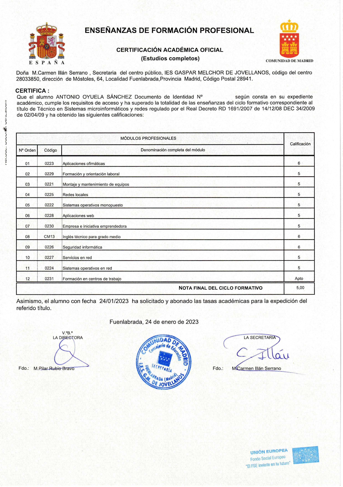
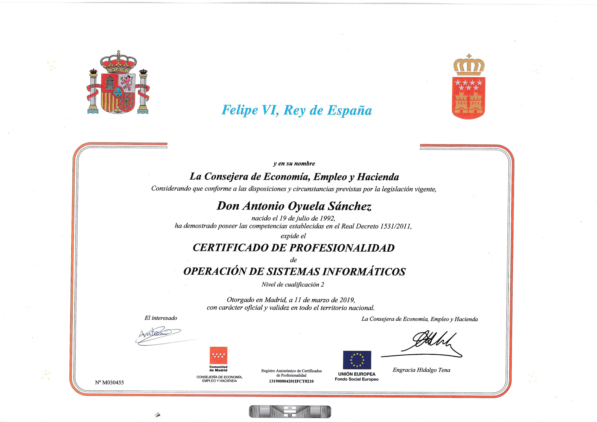
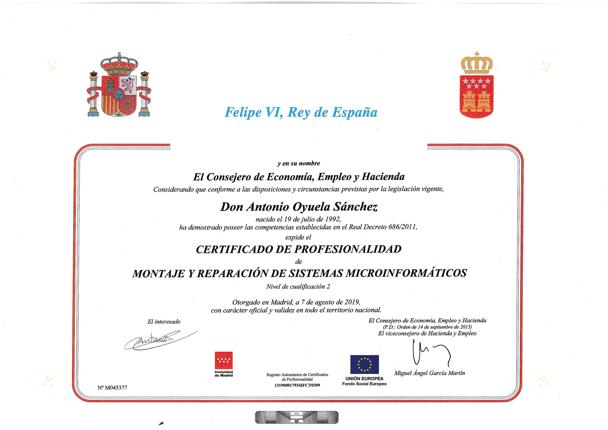
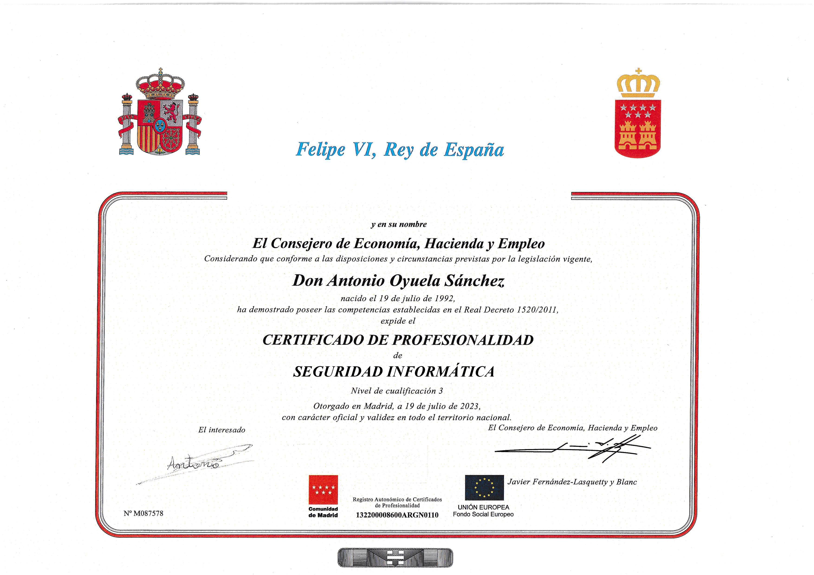
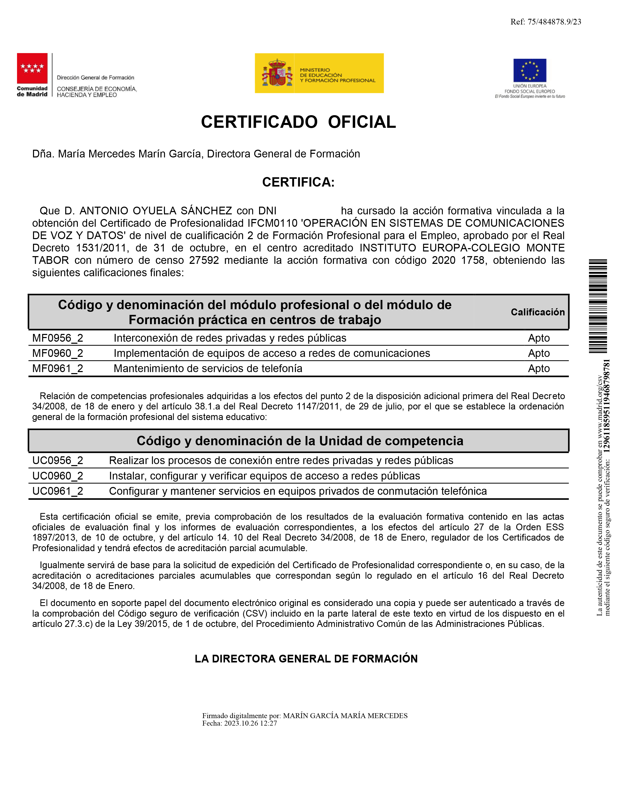

Antonio Oyuela Sánchez
Técnico Informático
antoniooyuelasanchez@gmail.com | +34 628199112
España (Madrid)
Perfil Profesional
Técnico Informático con amplia experiencia en instalación, configuración, mantenimiento y reparación de sistemas informáticos. Competente en la resolución de problemas técnicos, optimización de hardware y software, y aseguramiento de la funcionalidad continua de sistemas y redes. Habilidad demostrada en brindar soporte técnico a usuarios, administración de redes y seguridad informática. Capaz de trabajar de manera autónoma y en equipo, con excelente capacidad de comunicación y adaptación a nuevas tecnologías.
Experiencia Laboral
Conserje | Auxiliar de información
Serlingo | 2022 - Actualidad
- Responsable de varios Centros Sociales, abrir y cerrar
Mozo de almacén | Clasificación
Correos y Telégrafos | 2017 - 2022
- Clasificación de correspondencia en toda España
Programador Full Stack
SomoSierratech | 2024 (1 Mes)
- Programar tanto la parte FrontEnd, como la BackEnd de Proyectos de la empresa
Programador Web | Diseñador Web
Pipote S.A. | 2024 (1 Mes)
- Crear diseños y optimizar sus páginas webs de la empresa.
Técnico Micoinformático
Satel Iberia, S.A | 2022 (3 Meses)
- Arreglar Ordenadores de la empresa y Programación de lenguajes Orientados a Objetos
Informático
Jet Computer | 2023 (40 Horas)
- Montaje y Reparación de ordenadores
Informático
Computer Renting | 2019 (40 Horas)
- Arreglar ordenadores
Informático
Globaltis | 2019 (40 Horas)
- Arreglar ordenadores In-situ y remotamente
Técnico Diseñador Gráfico | Web
Ediciones Palabra, S.A | 2017 (3 Meses)
- Diseñar portadas, banners para la Web de la empresa y corregir varias ediciones de libros
Educación
Técnico Medio en Sistemas Microinformáticos y Redes (SMR)
IES Gaspar Melchor de Jovellanos | 2009 - 2022
Notas  Título
Desarrollo de Aplicaciones Web (DAW) | 1ª Año
IES Enrique Tierno Galván | 2019 - 2020 Futuro*
Estudios Complementarios
Certificados de Profesionalidad | Área: SISTEMAS Y TELEMÁTICA
- Operación de Sistemas Informáticos | Nivel 2 (600 Horas) | 
- Montaje y Reparación de Microsistemas Informáticos | Nivel 2 (510 Horas) | 
-
Sistemas Microinformáticos | Nivel 2 (600 Horas) |

- Seguridad Informática | Nivel 3 (500 Horas) | 
Certificados de Profesionalidad | Área: SISTEMAS Y DESARROLLO
- Confección y Publicación de Páginas Webs | Nivel 2 (560 Horas) | Futuro*
- Desarrollo de Aplicaciones con Tecnologías Weba | Nivel 3 (590 Horas) | Futuro*
Certificados de Profesionalidad | Área: COMUNICACIONES
- Operación en Sistemas de Comunicaciones de Voz y Datos | Nivel 2 (550 Horas) | 
- Programación con lenguajes orientados a objetos y bases de datos relacionales | Nivel 3 (550 Horas) | Futuro Septiembre 2024